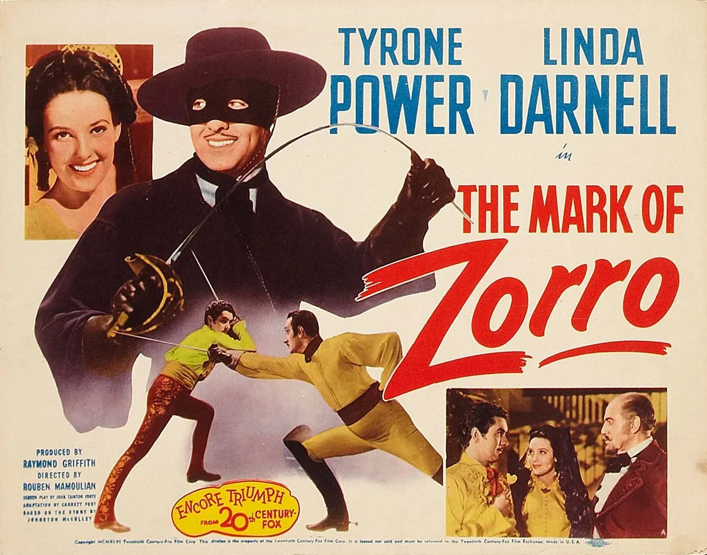

ზორო
ზორო არის ძალიან ჭკვიანი და ძლიერი და აი ამიტომ მომწონს ზორო გმირი.სერ ენტონი ჰოპკინზი— უელსელ–ამერიკელი მსახიობი, რომელიც ასრულებს როლებს ფილმებში, თეატრებსა და სატელევიზიო შოუებში. ჰოპკინზი აღიარებულია ერთ-ერთ უდიდეს მსახიობად. იგი ცნობილია კანიბალიზმის მიმდევარი სერიული მკვლელის, ჰანიბალ ლექტერის განსახიერებით 1991 წლის ფილმში კრავთა დუმილი, რომლისთვისაც მან მიიღო ამერიკული კინოაკადემიის ოსკარის ჯილდო ნომინაციაში საუკეთესო მამაკაცი მსახიობი. მისი ფილმებიდან აღსანიშნავია ადამიანი სპილო, დრაკულა, შემოდგომის ლეგენდები, დღის ნარჩენები, ზოროს ნიღაბი, მსოფლიოს უსწრაფესი ინდიანი, გაყინული გულები, ნიქსონი, გადატეხა და სხვ. ჰოპკინზი დაიბადა და გაიზარდა უელსში, ხოლო 2000 წლის 12 აპრილს მიიღო აშშ-ის მოქალაქეობა. 2003 წელს მას გაუხსნეს ვარსკვლავი ჰოლივუდის დიდების ხეივანში. ოსკარის ჯილდოსთან ერთად, ჰოპკინზს მოგებული აქვს შემდეგი პრიზები: სამი ბრიტანული აკადემიის ფილმების ჯილდო, ორი ემი, ოქროს გლობუსი და სხვა.